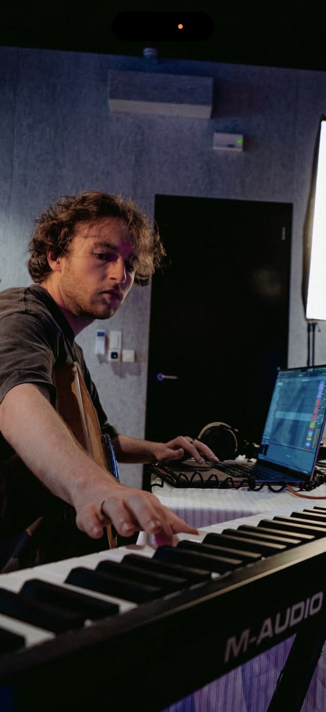

FEATURED PROJECT / 01
Smooth River
MAHILA
My contribution
Production · Topline · Songwriting

MELODIES. WORDS. FEELING.
I'm Sebast. A topliner, songwriter and producer making music that feels human.
Toplines for DJs & producers.

IN THE STUDIO / IN MY ELEMENT01 / LISTEN
Explore my toplines and productions. Hear something that connects? Let's talk.
02 / SELECTED WORK
A selection of released projects and collaborations.
MAHILA
My contribution
Production · Topline · Songwriting
Saint Aubain
My contribution
Production

carmen
My contribution
Production
03 / A LITTLE ABOUT ME
I don't take myself too seriously. I take what I make seriously.
There's a playful side to me, and a vulnerable one. Both belong in my music. I write from real feelings, mistakes and the things we're still figuring out.
Whether I'm shaping a topline or building a production, I want to make something that connects. A melody you remember. Words you recognise yourself in. Something you can dance to, cry to, or simply feel.
Music production · KASK & Conservatorium
Explore BLACKSTAR, my artist project ↗GOT A TRACK IN MIND?